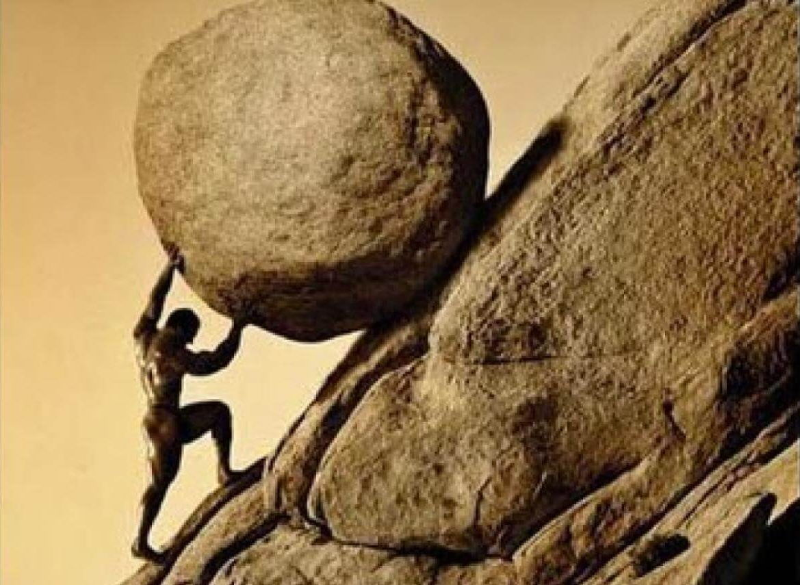

Longswords
how their Made
The creation of a longsword, a versatile and iconic weapon, involved a meticulous and labor-intensive process that varied across cultures and historical periods. The techniques and materials used in longsword production evolved over time, reflecting advancements in metallurgy, craftsmanship, and the specific needs of the warriors who wielded them.
Materials: The primary material for crafting longswords was steel, prized for its balance of strength and flexibility. Skilled blacksmiths selected iron ore and subjected it to a smelting process, extracting impurities to obtain a purer form of iron. This raw iron was then alloyed with carbon through a process known as carburization, resulting in steel. The quality of the steel was crucial, as it determined the sword's durability, sharpness, and overall performance.
Forging: The forging process began with the blacksmith heating the steel in a forge until it reached a malleable state. The red-hot metal was then shaped using a combination of hammering and pressing on an anvil. The initial shape of the sword was formed during this stage, including the blade, tang (the part of the blade that extends into the hilt), and crossguard.

Quenching: Quenching was a critical step to harden the blade. The heated sword was rapidly cooled by immersion in water or oil, a process that induced a transformation in the steel's crystal structure, enhancing its hardness. However, this hardening also made the blade brittle. To address this, a process called tempering followed, where the sword was reheated to a lower temperature to balance hardness with resilience. This careful balance was essential to prevent the sword from being too brittle or too soft.
Grinding and Polishing: After quenching and tempering, the rough shape of the sword underwent extensive grinding to refine its edges and surfaces. This process involved the use of grinding wheels, files, and other abrasives to achieve the desired sharpness and shape. The swordsmith carefully shaped the bevels and edge geometry, creating a blade suitable for cutting, thrusting, or a combination of both. The meticulous grinding was crucial not only for functionality but also for the aesthetic appeal of the weapon.
Hilt Construction: Simultaneously, the hilt components were crafted. The crossguard, pommel, and grip were often made of materials such as steel, brass, or wood. Intricate designs on the crossguard and pommel were not only decorative but also served practical purposes, providing hand protection and balance to the weapon. The tang of the blade was inserted into the hilt and securely fastened, ensuring the integrity of the entire structure.
Decoration and Customization: Many longswords were not merely utilitarian tools but also symbols of status and craftsmanship. Swordsmiths often embellished blades with intricate engravings, inlays, or etchings. Pommels and crossguards were sometimes adorned with precious metals or gemstones, showcasing the skill of the artisan and the wealth of the owner.
Final Inspection and Testing: Once the longsword took shape, it underwent a final inspection. The blade's straightness, balance, and overall quality were scrutinized. Some swords were subjected to rigorous testing, including cutting through various materials or even other blades to ensure their effectiveness in combat.
In conclusion, crafting a longsword was a highly specialized and laborious process that required a combination of metallurgical knowledge, blacksmithing skill, and artistic flair. The resulting weapon was not only a functional tool for combat but also a testament to the craftsmanship and ingenuity of its creator. The evolution of sword-making techniques over the centuries contributed to the diversity and richness of longsword designs found in museums and private collections today.
